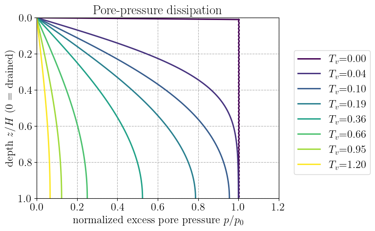
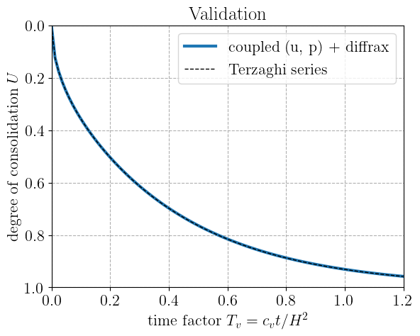
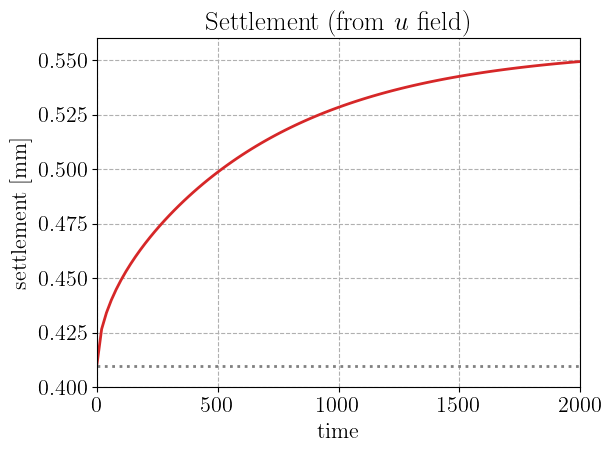

Fully coupled poromechanics: consolidation of a poroelastic column#
This demo simulates the consolidation of a saturated poroelastic column by solving
the fully coupled hydro-mechanical problem: the displacement field \(u\) and the
pore pressure field \(p\) are treated as simultaneous unknowns, and the constitutive
model is a coupled multiphysics behavior. Time is integrated with
diffrax, and the result is validated
against the analytical Terzaghi solution.
A multiphysics constitutive model#
Classical mechanics behaviors map one input to one output, typically strain to stress,
constitutive_update(eps, state, dt). Poromechanics extends this structure to two
different fields. The material responds to the strain \(\beps\) and the pore
pressure \(p\), and returns two conjugate quantities, the total stress \(\bsig\)
and the variation of fluid mass content \(m\) (per unit reference
volume). Writing \(\zeta = m/\rho_f^0\) for the (dimensionless) Lagrangian
variation of fluid content, the behavior is:
For linear isotropic (Biot) poroelasticity these read
where \(\mathbb{C}\) is the drained stiffness, \(b\) is the Biot coefficient and \(M\) the Biot modulus. Both relations derive from a single quadratic free energy, so the coupling is symmetric: the same \(b\) links pressure to stress and strain to fluid content. The cross terms \(-b\,p\,\bI\) and \(b\,\mathrm{tr}\,\beps\) are the hydro-mechanical coupling. The two physics decouple only in the case \(b=0\).
In jaxmat, such a behavior starts by declaring the variables it exchanges with
make_physics: the gradients \((\beps, p)\) given as inputs, and their conjugate fluxes
\((\bsig, \zeta)\) computed by the behavior. The declaration generates the corresponding state
class, so that a MultiphysicsBehavior only implements the constitutive relations, in its
response method. Packing the inputs and outputs and storing them in the new state are done
automatically. The names and conventions are those of the formulation at hand: here the
pore pressure is p and its conjugate flux the fluid content zeta.
Here, we will focus on a fully coupled treatment of consolidation: the multiphysics
constitutive_update is evaluated at every spatial node for both \(\beps\) and \(p\)
and the coupled displacement-pressure system is solved as such.
import diffrax
import equinox as eqx
import jax
import jax.numpy as jnp
import lineax as lx
import matplotlib.pyplot as plt
import optimistix as optx
from matplotlib import cm
import jaxmat.materials as jm
from jaxmat.parameters import parameter
from jaxmat.state import make_physics
from jaxmat.tensors import IsotropicTensor4, SymmetricTensor2
POROMECHANICS = make_physics(
"Poromechanics",
gradients={"strain": SymmetricTensor2, "p": 0.0},
fluxes={"stress": SymmetricTensor2, "zeta": 0.0},
)
class PoroElastic(jm.MultiphysicsBehavior):
"""Linear isotropic Biot poroelasticity: (eps, p) -> (sigma, zeta)."""
physics = POROMECHANICS
K: jax.Array = parameter() # drained bulk modulus
mu: jax.Array = parameter() # shear modulus
b: jax.Array = parameter() # Biot coefficient
M: jax.Array = parameter() # Biot modulus
@property
def C(self):
return IsotropicTensor4(kappa=self.K, mu=self.mu)
def response(self, x, state, dt):
sig = self.C @ x.strain - self.b * x.p * SymmetricTensor2.identity()
zeta = self.b * x.strain.tr + x.p / self.M
return (sig, zeta), None # no internal state variables
mat = PoroElastic(K=10e3, mu=6e3, b=0.9, M=8e3) # MPa
# The behavior is linear, without internal variables: the same initial state serves everywhere.
state0 = mat.init_state()
E_oed = mat.K + 4 * mat.mu / 3 # oedometer modulus (for reference/validation only)
Governing equations#
We consider a column of height \(H\) under oedometer conditions (uniaxial strain: only the vertical strain \(\varepsilon_{zz}=\partial_z u\) is nonzero). Two balance laws are solved together:
Quasi-static mechanical equilibrium (algebraic in time):
\[\displaystyle \frac{\partial \sigma_{zz}}{\partial z} = 0,\]with a prescribed vertical total stress \(\sigma_{zz}=\sigma_\text{top}\) at the top and a fixed base \(u=0\) at the bottom.
Fluid mass balance with Darcy flow (dynamic):
\[\displaystyle \frac{\partial \zeta}{\partial t} = \frac{k}{\gamma_w}\frac{\partial^2 p}{\partial z^2},\]with a drained top (\(p=0\)) and an impermeable bottom (\(\partial_z p = 0\)).
The coupling runs both ways: \(\sigma_{zz}\) depends on \(p\) through the constitutive law, and \(\zeta\) (whose rate drives the fluid equation) depends on the strain, i.e. on \(u\). The genuinely time-evolving quantity is the fluid content \(\zeta\); given \(\zeta\), the pair \((u,p)\) is fixed by the mechanical equilibrium together with the constitutive relation. This is a differential-algebraic system.
N = 101
H = 1.0
z = jnp.linspace(0.0, H, N)
dz = z[1] - z[0]
k_cond, gamma_w = 1e-9, 9.81e-3 # conductivity, fluid specific weight
sig_top = -10.0 # applied vertical total stress [MPa] (compression)
c = k_cond / gamma_w
def grad_z(f):
"""Vertical derivative by central / one-sided finite differences."""
g = jnp.zeros(N)
g = g.at[1:-1].set((f[2:] - f[:-2]) / (2 * dz))
g = g.at[0].set((f[1] - f[0]) / dz)
g = g.at[-1].set((f[-1] - f[-2]) / dz)
return g
def constitutive_update_1D(eps_zz, p):
"""Evaluate the multiphysics behavior (eps, p) -> (sigma_zz, zeta) at a given node."""
eps = SymmetricTensor2(array=jnp.array([0.0, 0.0, eps_zz, 0.0, 0.0, 0.0]))
(sig, zeta), _ = mat.constitutive_update((eps, p), state0, 1.0)
return sig.tensor[2, 2], zeta
# batch multiphysics behavior evaluation across all node
batched_constitutive_update = eqx.filter_vmap(constitutive_update_1D)
Recovering the coupled \((u,p)\) state#
The dynamic variable of the problem is the fluid content field \(\zeta\). At any instant we must recover the pair of fields \((u, p)\) consistent with that \(\zeta\). Rather than eliminate the pressure analytically (which could be possible though in this linear case), we solve for both \(u\) and \(p\) monolithically from a coupled residual with two blocks:
a mechanical block enforcing equilibrium \(\partial_z\sigma_{zz}=0\) (with the applied top stress and the fixed base), and
a constitutive/hydraulic block enforcing that the fluid content produced by the current \((u,p)\) matches the imposed \(\zeta\), i.e. \(\zeta(u,p)-\zeta = 0\), with the drained condition \(p_0=0\) substituted at the top node. Every residual evaluation calls the multiphysics
constitutive_updateat every node, so the two physics are coupled inside a single Newton solve.
def recover_up(zeta):
"""Solve mechanical equilibrium for (u, p) given the fluid content zeta."""
def residual(y, args):
u, p = y
eps_zz = grad_z(u)
sig, zeta_ = batched_constitutive_update(eps_zz, p)
rsig = jnp.zeros(N)
rsig = rsig.at[1:-1].set((sig[2:] - sig[:-2]) / (2 * dz)) # equilibrium
rsig = rsig.at[0].set(sig[0] - sig_top) # applied top stress
rsig = rsig.at[-1].set(u[-1]) # fixed base
rzeta = zeta - zeta_ # enforce fluid content value
rzeta = rzeta.at[0].set(p[0]) # enforce p=0
return rsig, rzeta
y0 = jnp.zeros(N), jnp.zeros(N)
u, p = optx.root_find(
residual,
optx.Newton(rtol=1e-6, atol=1e-6, linear_solver=lx.AutoLinearSolver(well_posed=True)),
y0,
max_steps=50,
throw=False,
).value
return u, p
Time integration with diffrax#
The dynamic variable is the fluid content \(\zeta\). Its rate is the Darcy flux of the
recovered pressure, \(\partial_t\zeta = c\,\partial_z^2 p\). At each right-hand-side
evaluation diffrax calls recover_up, which solves the coupled mechanics equilibrium,
i.e. finding the displacement and pressure fields in equilibrium with a given fluid content.
The semi-discretized diffusion ODE is stiff, so we use the ImplicitEuler solver.
The initial condition is the undrained response: at \(t=0^+\) the load is applied with no fluid yet exchanged, i.e. \(\zeta = 0\) everywhere, which already induces a nonzero pore pressure through the coupling.
def vector_field(t, zeta, args):
_, p = recover_up(zeta)
lap = jnp.zeros(N)
lap = lap.at[1:-1].set((p[:-2] - 2 * p[1:-1] + p[2:]) / dz**2)
lap = lap.at[-1].set((2 * p[-2] - 2 * p[-1]) / dz**2) # impermeable bottom
dzeta_dt = c * lap
return dzeta_dt
zeta0 = jnp.zeros(N) # undrained initial state
t_end = 2000.0
ts = jnp.linspace(0.0, t_end, 101)
sol = diffrax.diffeqsolve(
diffrax.ODETerm(vector_field),
diffrax.ImplicitEuler(),
t0=0.0,
t1=t_end,
dt0=1.0,
y0=zeta0,
saveat=diffrax.SaveAt(ts=ts),
stepsize_controller=diffrax.PIDController(rtol=1e-6, atol=1e-9),
)
# recover the full (u, p) history from the fluid-content trajectory
U_hist, P_hist = jax.vmap(recover_up)(sol.ys)
Validation and the undrained-to-drained transition#
The degree of consolidation \(U(t) = 1 - \bar p(t)/p_0\) measures how much of the initial excess pore pressure has dissipated. We compare it to the Terzaghi series in terms of the time factor \(T_v = c_v t/H^2\), where \(c_v = c/S\) and \(S = b^2/E_\text{oed} + 1/M\) is the oedometer storativity (used here only to non-dimensionalize the reference solution). The initial excess pressure is \(p_0 = -b M\,\sigma_\text{top}/(E_\text{oed}+b^2 M)\).
S = mat.b**2 / E_oed + 1 / mat.M
c_v = c / S
Tv = c_v * ts / H**2
p0 = -sig_top * mat.b * mat.M / (E_oed + mat.b**2 * mat.M)
U = 1.0 - jnp.trapezoid(P_hist, z, axis=1) / (p0 * H)
def U_terzaghi(Tv, nterms=200):
n = jnp.arange(nterms)
Mn = (2 * n + 1) * jnp.pi / 2
return 1.0 - jnp.sum((2 / Mn**2)[None, :] * jnp.exp(-(Mn**2)[None, :] * Tv[:, None]), axis=1)
mask = Tv > 0.02 # early-time front is under-resolved on a fixed grid
print(f"initial (undrained) p0[mid] = {float(P_hist[0][N // 2]):.4f} (expected {float(p0):.4f})")
print(
f"max |U_coupled - U_Terzaghi| = {float(jnp.max(jnp.abs(U[mask] - U_terzaghi(Tv[mask])))):.2e}"
)
initial (undrained) p0[mid] = 2.9412 (expected 2.9412)
max |U_coupled - U_Terzaghi| = 3.84e-04
Because both fields are solved, we can read the settlement directly from the displacement history. We clearly recover the consolidation phenomenon: the column continues to settle after the instantaneous undrained response, as the pore pressure dissipates and the load transfers to the skeleton.
settlement = U_hist[:, 0] # top displacement
print(f"undrained settlement (t=0+) : {float(settlement[0]) * 1e3:.4f} mm")
print(f"drained settlement (t=inf) : {float(settlement[-1]) * 1e3:.4f} mm")
print(f"consolidation increment : {float(settlement[-1] - settlement[0]) * 1e3:.4f} mm")
undrained settlement (t=0+) : 0.4100 mm
drained settlement (t=inf) : 0.5493 mm
consolidation increment : 0.1394 mm
Results#
We first show the pore pressure profile at different time steps. The excess pore pressure dissipates from the drained top: at \(t=0^+\) the pressure is uniform at \(p_0\) over the depth (the undrained response), and it relaxes towards zero from the top down as fluid drains, the front penetrating deeper with increasing time factor \(T_v\).
# pore-pressure isochrones
plt.figure()
idx = [0, 3, 8, 16, 30, 55, 79, 100]
colors = cm.viridis(jnp.linspace(0.0, 1.0, len(idx)))
for i, col in zip(idx, colors):
plt.plot(P_hist[i] / p0, z / H, color=col, label=f"$T_v$={float(Tv[i]):.2f}")
plt.xlabel("normalized excess pore pressure $p/p_0$")
plt.ylabel("depth $z/H$ (0 = drained)")
plt.title("Pore-pressure dissipation")
plt.gca().invert_yaxis()
plt.legend()
plt.show()

The consolidation curve collapses onto the Terzaghi series when plotted against \(T_v\), confirming that the fully coupled \((u,p)\) solve reproduces the classical solution to within the spatial discretization error (largest at very early times, where the pressure front near the drained boundary is sharpest).
# consolidation curve vs Terzaghi
plt.figure()
plt.plot(Tv, U, "C0", lw=3, label="coupled (u, p) + diffrax")
plt.plot(Tv, U_terzaghi(Tv), "k--", lw=1.0, label="Terzaghi series")
plt.xlabel("time factor $T_v = c_v t / H^2$")
plt.ylabel("degree of consolidation $U$")
plt.title("Validation")
plt.legend()
plt.gca().invert_yaxis()
plt.show()

Finally, the settlement history exhibits an instantaneous undrained settlement upon loading, followed by a slow time-dependent increase (the consolidation settlement) as the excess pressure dissipates and the load is progressively transferred from the pore fluid to the solid skeleton.
# settlement history (from the displacement field)
plt.figure()
plt.plot(ts, settlement * 1e3, "C3")
plt.axhline(settlement[0] * 1e3, ls=":", color="gray", label="undrained")
plt.xlabel("time")
plt.ylabel("settlement [mm]")
plt.title("Settlement (from $u$ field)")
plt.tight_layout()
plt.show()

Discussion#
This demo presents a coupled hydro-mechanical solver: displacement and pressure are
carried as separate fields, the multiphysics constitutive_update((eps, p)) is
evaluated at every node, and the two balance laws are satisfied simultaneously.
In one dimension with a linear material the result must coincide with Terzaghi,
which is exactly the validation we obtain. The above solver carries over unchanged
to the case of a nonlinear or finite-strain skeleton, a pressure-dependent
permeability, etc.